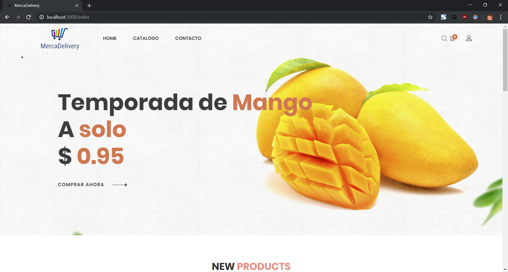

Resumen del Proyecto¶
Nuestra implementación de proyecto trata sobre una plataforma web de la cual a través de ella se puedan vender productos agrícolas tanto frutas y verduras, además tendrá un servicio de entrega a domicilio. El link del repositorio se puede encontrar en Github
section 1 Introducción¶
Tras la suspensión del Mercado de Abastos, el 2 de enero se inauguró el proyecto de Merca Panamá, Mercados Nacionales de la Cadena de Frío, en la vía Centenario, a un costado de la Ciudad de la Salud, también conocida como Ciudad Hospitalaria.
section 1.1. Justificación¶
Actualmente los vendedores de MercaPanamá tienen una frecuencia de clientela más o menos esporádica pero no con la frecuencia de cuando se ubicaba en el centro de la ciudad por ello pensamos en una aplicación web y una app para móviles que proporcione una relación cliente-vendedor más estrecha para entregar a domicilio los productos de los vendedores a los clientes cerrando un poco la brecha de lejanía que existen entre algunos clientes y ayudando al mismo tiempo a los vendedores a agilizar más sus productos.
sección 2. Descripción de Alto nivel¶
GPS y Google Maps:¶
El uso del GPS del dispositivo del usuario para ubicarlo y enviarle los productos, mientras se ubica al motorizado en tiempo real con el uso de Google Maps.
Flask y Jinja:¶
El uso de una aplicación web donde estará ubicado toda la información sobre los productos y sus ofertas. Jinja más que todo es un lenguaje de templates (html’s) para Flask.
Pago en línea:¶
Se utilizaría un sistema de pago en línea donde el usuario paga por medio de tarjeta de débito o crédito. Actualmente, se utiliza un mock pero se conoce de la consola de desarrollo de Paypal.
Base de datos:¶
El Catálogo es el menú de los productos disponibles (y no disponibles) de Merca Panamá, el cual cuenta con un Carrito de Compras donde se estarán almacenando cada producto a pedir del usuario.
Las categorías de ventas y el carrito de compras se maneja por medio de una Base de datos no sql llamada MongoDB y monitoreada por MongoDB Compass.
Entre otras categorías de la Collection está:
artículos: descripción, detalles y cantidades disponibles de productos.
Carrito : productos guardados por usuarios para su posterior compra.
categorias : categorias de productos.
ordenes : una vez se tramita el carrito, aquí se guardan ordenes en proceso u ordenes entregadas al usuario. (No se implementó uso a esta parte del código)
usuarios : Inicialmente guarda el correo y contraseña, aunque posteriormente para tramitar un pedido se debe especificar lugar de residencia.
sección 3. Flujo de páginas¶
En primera instancia el usuario se registra para luego iniciar sesión. Inmediatamente se muestra el índice de la aplicación web
{kind=link}
y se podrá ingresar a la opción de catálogo donde la persona puede elegir el producto de su gusto y ver detalles de cada producto y adicionarlo al carrito para luego hacer su pedido. Al hacer el pedido surgirá una pantalla para tramitar el pedido del usuario, una vez finalizado el pago, otra pantalla aparecerá mostrando el estado del pedido que puede ser: entregado o en camino. El resumen de los pedidos no pudo ser implementado
seccion 4. Alcance del sistema¶
Nuestro sistema se limita a la muestra de un catalogo y la compra de artículos que ofrece MercaPanamá. Aunque se pueda trabajar en un futuro sobre una página de motorizados y una página de administradores.